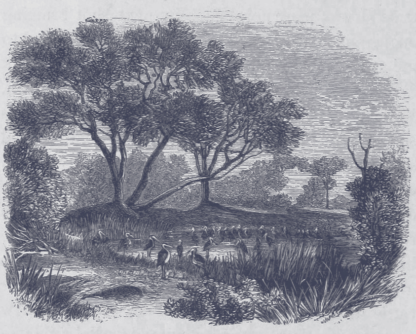
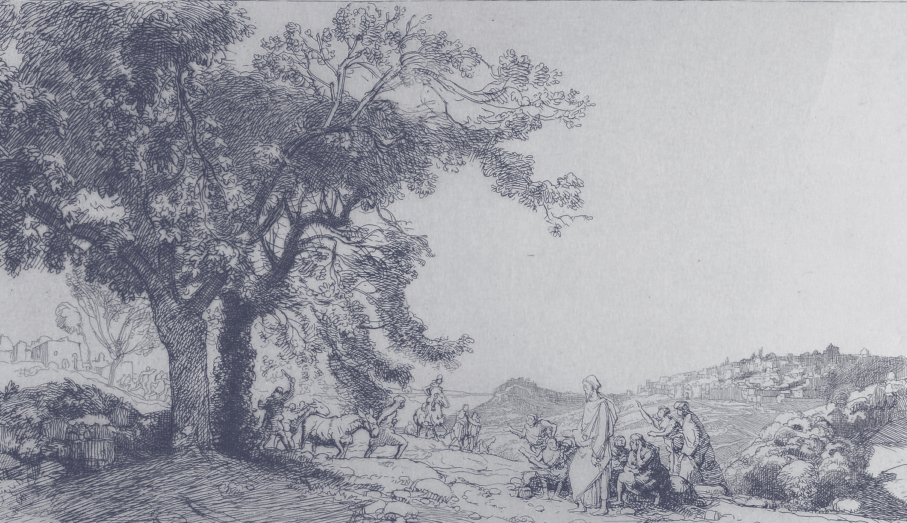

CONSIDÉRANT LES FAITS SUIVANTS :
1. L'idée de transition n'est apparue qu'assez récemment. Dans les années 1970, au moment des chocs pétroliers, on parlait plutôt de « crise énergétique ». Mais l'idée d'un manque d'hydrocarbures était une perspective trop anxiogène. On sait aujourd'hui à quel point l'augmentation du prix à la pompe a tendance à susciter des révoltes. Le terme de « crise énergétique » est donc remplacé à la fin des années 70 par celui de « transition énergétique » sous l'influence d'institutions gouvernementales et d'organisations internationales. À l'idée d'une rupture, on substitue l'idée d'un passage en douceur. Le discours de la transition est donc un discours de gouvernement, qui nous dit : « La situation est sous contrôle, ne vous inquiétez pas. Il suffit de transitionner, et nous allons nous en sortir ». Si le cœur de l'idée de transition reste la transition énergétique, cette dernière se décline aujourd'hui sous d'autres formes : écologique, sociale, industrielle.
2. L'idée de transition rend opportunément le futur moins inquiétant, en laissant penser qu'une rationalité planificatrice et gestionnaire pourrait nous sauver du ravage écologique. Au contraire, c'est précisément cette rationalité, qui délègue notre salut à la technologie, au pilotage étatique et au progrès de la science, qui est à l'origine de la présente situation.
3. Depuis déjà cinquante ans, on parle de « transition », sans qu'il y en ait la moindre amorce. Au contraire, toutes les courbes vont dans le sens inverse de la transition attendue.
4. La transition est toujours rejetée dans l'avenir, et dans un avenir toujours plus lointain : d'ici 2030, d'ici 2050, d'ici 2100. La transition est intransitive : toujours en transition vers elle-même. C'est à se demander si l'idée même de transition n'a pas précisément pour fonction de différer indéfiniment toute véritable transformation écologique.
5. Pour justifier que la transition n'avance pas, les décideurs invoquent toujours des raisons d'ordre économique. À chaque idée de transformation ambitieuse, on répondra qu'il n'y a pas d'argent magique, ou qu'il serait insensé de revoir notre mode de vie de fond en comble. Une transition raisonnable, pour eux, c'est un ensemble de petits pas sans conséquence, et l'ouverture de nouveaux marchés écologiques qui doivent contribuer à la croissance. L'écologie devra être une dernière occasion de profit.
6. Pour les tenants de la transition, ce qui s'oppose à la transition est surtout un obstacle de pensée : un manque de « bonne volonté », un défaut de « vision » ou des « idéologies ». Ils n'arrivent pas à concevoir que l'obstacle principal à la transition est très matériel, et qu'il emprisonnerait même des décideurs ou des États qui voudraient se lancer de bon cœur dans la transition. Car on ne change pas de modèle économique comme on change la banquise en eau. L'économie ne ressemble pas à de la pâte à modeler : c'est un réseau immense d'infrastructures et de flux dans lequel des capitaux ont été massivement investis. Ces investissements, qui demandent à être rentabilisés sous peine de crise économique, bloquent toute possibilité de transition. Quant à l’État, en qui ces écologistes placent tous leurs espoirs de transition, c'est bien plutôt l'organe qui a pour vocation de garantir et réguler l'ordre économique qui détruit activement la planète. N'est-il pas contradictoire de demander une transition à un sujet qui s'appelle État ?

7. Il n'y a jamais eu, dans l'histoire de l'humanité, de transition énergétique. Il n'y a eu que des ruptures (effondrements, révolutions, guerres) et des additions énergétiques. L'humanité n'est pas passée, comme on le raconte à l'école, du bois au charbon, puis du charbon au pétrole. En réalité, les énergies renouvelables ne viennent pas remplacer les énergies fossiles, mais s'y additionner. Dans le mix énergétique mondial, la part des énergies fossiles est de 80% depuis 30 ans, alors que sur la même période, on s'est beaucoup vanté de transitionner vers les énergies renouvelables. À moins d'une rupture (de stock ou obtenue par l'action politique), il n'y aura donc pas de sortie des énergies fossiles, car ce sont les énergies les plus fluides qui sont les plus adéquates à l'accumulation du capital.
8. Les énergies renouvelables ont le fâcheux défaut de dépendre des cycles et des contraintes naturelles : on les dit intermittentes. Contrairement aux énergies fossiles, elles ne conviennent pas à une économie en croissance dont les flux doivent être stables. En outre, pour que les dispositifs de captation d'énergie renouvelable soient rentables et pour qu'ils puissent être pilotés informatiquement, il faut extraire et utiliser des métaux rares. Or l'industrie minière provoque des pollutions et inflige des conditions de vie et de travail intolérables aux populations qui ont le malheur d'avoir ces minerais sous leurs pieds. Enfin, quand des éoliennes, des panneaux solaires ou des centrales à biomasse sont installés à une échelle industrielle, c'est toujours, de manière absolument anti-écologique, au mépris des habitant·es et des paysages qui subissent leurs nuisances, et du contrôle démocratique que l'on devrait exercer sur la production et la distribution de l'énergie. De sorte que, pour l'instant, ce qui est « renouvelable », c'est surtout l'exploitation des humains et des milieux vivants.
9. Un capitalisme vert fonctionnant aux énergies renouvelables suppose une société de surveillance généralisée. En effet, la distribution de ces énergies à une large échelle nécessiterait, du fait de leur intermittence, un contrôle très précis de leur consommation et de leur distribution, via un réseau électrique intelligent (smart grids). Pour adapter le système en temps réel, il faudrait savoir très précisément qui consomme quoi, quand, où. La transition sert donc déjà de prétexte à un odieux chantage. En échange de la promesse de rendre notre consommation soi-disant écologique, on exige notre assentiment à une surveillance accrue de nos comportements. Ce processus est à l'œuvre avec l'idée de « carte carbone », avec la récolte de données sur smartphone ou le déploiement d'un compteur « intelligent » (Linky) sur le territoire français. Les responsables de la transition s'arrogent le droit de surveiller en temps réel la consommation de toute personne qui, bien sûr, n'a rien à se reprocher tant qu'elle continue à croire qu'une transition est possible. Alors que l'écologie devient un moyen de contrôle parmi d'autres, l'idée d'un avenir chantant et verdoyant prend de plus en plus l'allure d'une dystopie.

10. La transition promise ne pourra donc qu'être un incessant progrès dans le rationnement, les interdictions, les restrictions. En guise de société écologique, elle esquisse une société de discipline et de la surveillance, où chacun·e sera chargé·e de manager son empreinte carbone, et de surveiller mesquinement la consommation des autres. Comme cela se fait déjà à chaque fois que nous poliçons les actes de nos proches en croyant que cela a quelque forme d'importance « pour la planète ». Si c'est cela l'écologie, alors on voit mal en quoi elle rendrait la vie digne d'être vécue.
11. Parler de transition, c'est se laisser le temps de voir le ravage écologique continuer, des milliards de personnes être exploitées, des millions d'exilé·es périr sur les routes ou dans les mers, des millions d'hectares être artificialisés et des milliers d'espèces disparaître. Après la transition vers la terre promise, le royaume de Dieu ou le socialisme réel, nous sommes à l'ère de la transition écologique. On nous promet cette fois le « paradis vert », mais il s'agit toujours de nous faire supporter les horreurs présentes.
12. La petite chanson de la transition est comme une berceuse qui entretient le doux espoir qu'il existe une voie du dialogue, de la coopération, où les citoyen·nes marcheraient main dans la main avec les acteurs sociaux, entrepreneurs et élus, pour changer la société. Mais il se pourrait aussi bien qu'elle serve à contenir les peuples dans un état d'impuissance et d'inaction.
13. Il y a ce fait étrange que les personnes qui n'attendent pas la transition pour créer des mondes vivables subissent une dure répression. Comme si démontrer en acte que l'idée de transition est une coquille vide était la révélation intolérable d'un vilain petit secret.
14. Le succès de l'idée de transition repose sur la peur de la guerre civile qui pourrait émerger de l'effondrement de nos sociétés. On a montré en quoi cette alternative entre transition et guerre était fausse, puisque la forme que prend la transition aujourd'hui revient toujours et encore à une guerre des États contre les milieux vivants et ce, qu'il s'agisse de perpétuer l'économie du ravage en la repeignant en vert ou de surveiller et de contrôler des populations sur lesquelles on fait peser tout le poids de la crise écologique. Sortir de cette fausse alternative entre transition et guerre civile, c'est se souvenir qu'il y a toujours eu d'autres voies, révolutionnaires, qui ne sont, ni plus ni moins, que des prises en main par les vivants de leurs propres destins. Non pas l'attente du grand soir, mais la préparation et la création dès aujourd'hui de meilleurs matins.
15. Il serait peu avisé de continuer à espérer une transition, à l'heure où nous sommes plus que jamais dépendant·es d'un système qui s'écroule pour nous nourrir, nous vêtir, nous loger, communiquer. S'il y a une urgence, c'est celle de retrouver immédiatement, c'est-à-dire sans transition, les moyens de notre subsistance à long terme : savoir-faire, techniques et puissance d'agir collective.
16. La pandémie de Covid-19 confirme que ce n'est que dans un contexte de rupture que nous pourrions mettre fin au ravage (arrêt de larges pans de l'économie, relocalisation et revalorisation des activités vitales). Elle montre aussi à quel point il est important que ces mesures soient prises par un mouvement révolutionnaire, et non par des gouvernements au service de l'économie. Sans quoi, ces mesures ne seront que temporaires et injustes. En outre, à l'occasion de la pandémie, elles servent malheureusement d'accélérateur à un renforcement inédit du contrôle numérique et policier. La transition écologique est plus que jamais un mirage ; la rupture politique une nécessité.
NOUS DÉCLARONS :
Que nous ne voulons plus, désormais, entendre parler de transition.
Qu’est advenue l’ère de l’écologie sans transition !